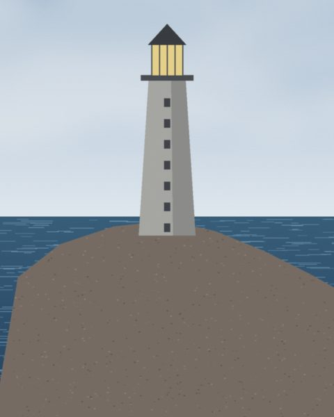
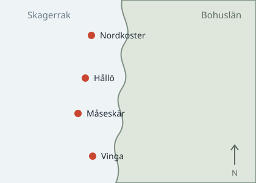

Fyrar längs Bohuskusten
Den här sajten samlar fyra fyrar mellan Göteborg och Strömstad: när de byggdes, hur högt de lyser och hur långt ljuset når. Uppgifterna är hämtade ur Sjöfartsverkets öppna register.


Vad en fyr gör
En fyr talar om två saker för den som är ute på vattnet: här är land och här är du. Det andra är det svåra. Två fyrar som blinkar likadant är oanvändbara, så varje fyr har ett eget mönster.
Karaktären
Mönstret kallas fyrens karaktär och skrivs som en kod. Fl(2) 10s betyder
två blink var tionde sekund. Den som ser mönstret vet vilken fyr det är, och därmed
var på kartan hon befinner sig.